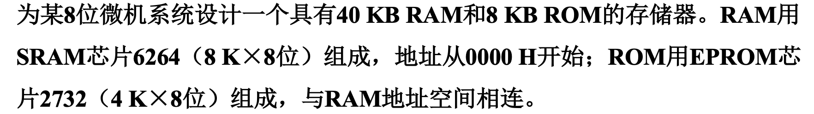
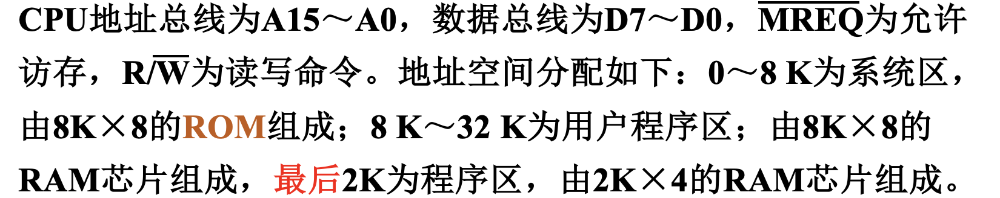
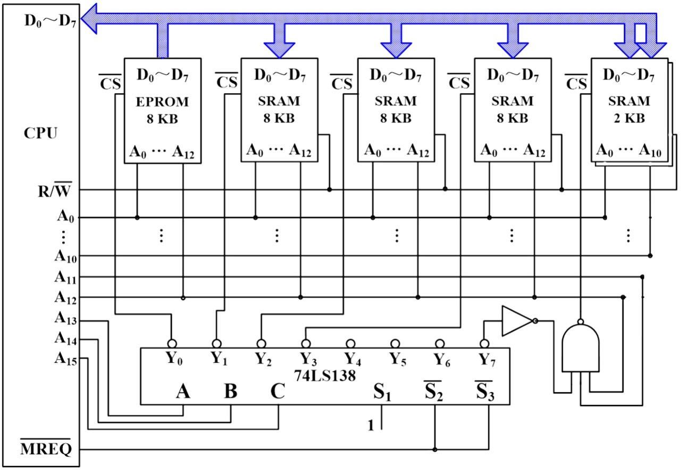
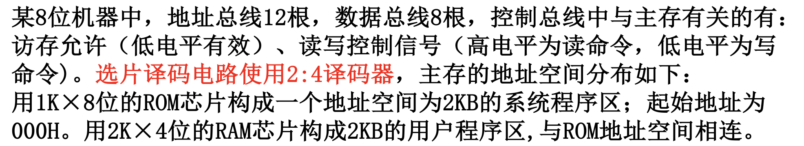
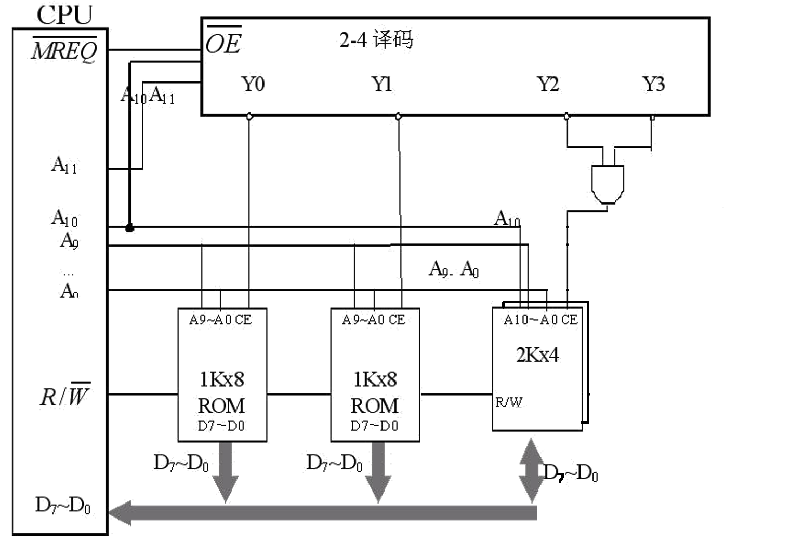

对于 MK ×N 的芯片，其中 M K 表示的含义为：存储单元的数目为 210M，反映的是地址线的根数：log2M+10；N 表示的含义为每个存储单元的位数，即数据线的根数。
1K=210=400H
例如 8×1 的RAM：

位扩展
如果存储器芯片的存储单元数满足要求，但每个存储单元的位数不够，则需进行位扩展——共享地址。
由 a×t 的芯片组成 a×ct 的芯片，需要用到 c 个a×t芯片。
将 c 个芯片的地址线、控制线并联在一起。当给出某个地址时，同时选中 c 个芯片，将 c 个芯片上的数据从数据总线上并行读出或写入。

字扩展
如果存储器芯片中每个存储单元的位数满足要求，而存储单元的数目不够，则需进行字扩展。
由 a×t 的芯片组成 ca×t 的芯片，需要用到 c 个 a×t芯片。
原本地址线的数目为 log2a 条，现在所需要的地址线数目为：⌈log2(ca)⌉=log2a+⌈log2c⌉，即需要再添加 ⌈log2c⌉ 根地址线。这 ⌈log2c⌉ 根地址线会作为片选信号，通过译码器在 c 个 a×t 芯片中进行选择。
要保证地址空间内的任一地址都能映射到一块唯一的芯片（不考虑位扩展）。若一个芯片的地址范围为 L，则有且仅有在 L 中的地址能够使能该芯片，其余地址都无法使能该芯片。
字扩展中关键就是要考虑：芯片何时使能？→ 根据二进制地址范围中某些特殊位 列出逻辑表达式（译码器本质上也只是逻辑式的一种表现方式）。
给定一个地址，起决定作用的是地址的 高⌈log2c⌉位（因为所有芯片都会收到低 log2a 位），最终会选择到某一个芯片中的某个地址。
| 芯片 |
地址范围 |
| 1 |
\stackrel{}{\underset{\text{\lceil log\ c\rceil位}}{\underbrace{0..00}}}\stackrel{}{\underset{\text{log\ a位}}{\underbrace{0....00}}}\ \sim \stackrel{}{\underset{\text{\lceil log\ c\rceil位}}{\underbrace{0..00}}}\stackrel{}{\underset{\text{log\ a位}}{\underbrace{1....11}}} |
| 2 |
\stackrel{}{\underset{\text{\lceil log\ c\rceil位}}{\underbrace{0..01}}}\stackrel{}{\underset{\text{log\ a位}}{\underbrace{0....00}}}\ \sim \stackrel{}{\underset{\text{\lceil log\ c\rceil位}}{\underbrace{0..01}}}\stackrel{}{\underset{\text{log\ a位}}{\underbrace{1....11}}} |
| 3 |
\stackrel{}{\underset{\text{\lceil log\ c\rceil位}}{\underbrace{0..10}}}\stackrel{}{\underset{\text{log\ a位}}{\underbrace{0....00}}}\ \sim \stackrel{}{\underset{\text{\lceil log\ c\rceil位}}{\underbrace{0..10}}}\stackrel{}{\underset{\text{log\ a位}}{\underbrace{1....11}}} |
| ⋮ |
⋮ |

一般情况下，译码器的输出为低电平有效，芯片的使能端也为低电平有效，因此直接将译码器的输出与芯片的使能端相连即可实现片选。
注意：译码器的输出就是 Yi，上面的横线表示的是低电平有效，并无其他含义，不要译码器的输出是 Yi。
更复杂的字扩展
例1

题目分析：
-
“8位微机系统”说明数据线宽度为 8 。
-
需要 40 KB 的ROM，则应由 5 片 8K×8 的芯片构成。
需要 8 KB 的RAM，则应由 2 片 4K×8 的芯片构成。
-
字扩展共需要 7 片芯片，因此需要使用 3-8 译码器。
-
总容量为 48K 个存储单元，因此取地址线的宽度为：⌈log2(48×210)⌉=16。
地址线：A0∼A15，其中高 3 位（A13,A14,A15）为片选信号。
-
地址空间相连：
| 芯片 |
十六进制地址范围 |
二进制地址范围 |
| RAM1 |
0000∼1FFF |
00000..0∼00011..1 |
| RAM2 |
2000∼3FFF |
00100..0∼00111..1 |
| RAM3 |
4000∼5FFF |
01000..0∼01011..1 |
| RAM4 |
6000∼7FFF |
01100..0∼01111..1 |
| RAM5 |
8000∼9FFF |
10000..0∼10011..1 |
| ROM1 |
A000∼AFFF |
10100..0∼10101..1 |
| ROM2 |
B000∼BFFF |
10110..0∼10111..1 |
前 6 片芯片可由高 3 位片选信号唯一确定；而当高 3 位地址为 101 时，仍不足以确定唯一的芯片，还需要根据 A12 的值来判断选择 ROM1 还是 ROM2。
也就是说，前 6 片芯片的使能信号直接连译码器的输出信号即可；而后 2 片芯片的使能 要考虑到译码器输出信号和 A12 ：
- 对于 ROM1：F=Y5 A12，则 F=Y5 A12=Y5+A12
- 对于 ROM2：F=Y5 A12，则 F=Y5 A12=Y5+A12

字位同时扩展
如果存储器芯片的存储单元数和每个存储单元的位数都不满足要求，就需要字位同时扩展。
由 a×t 的芯片组成 ma×nt 的芯片，需要用到 m×n 个 a×t 芯片。
地址线包含原有的和新增的。输入/输出是 n 个a×t 芯片的并行。


更复杂的拓展
例1

题目分析：
-
数据总线宽度为 8，地址总线宽度为 16。
-
8K 系统区需要 1 片 8K×8 ROM。
24K 用户程序区需要 3 片 8K×8 RAM。
2K 程序区需要 2 片 2K×4 RAM（位扩展）。
-
字扩展共需要 5 片芯片，因此采用 3-8译码，高 3 位为片选信号。
-
地址分布不连续：
| 芯片 |
十六进制地址范围 |
二进制地址范围 |
| ROM |
0000∼1FFF |
00000..0∼00011..1 |
| RAM1 |
2000∼3FFF |
00100..0∼00111..1 |
| RAM2 |
4000∼5FFF |
01000..0∼01011..1 |
| RAM3 |
6000∼7FFF |
01100..0∼01111..1 |
| × |
× |
× |
| RAM4 |
F800∼FFFF |
111110..0∼111111..1 |
前 4 片芯片可由高 3 位片选信号唯一确定；而当高 3 位地址为 111 时，仍不足以确定唯一的芯片，还需要根据 A12A11 的值来判断是否选择 ROM4。
也就是说，前 4 片芯片的使能信号直接连译码器的输出信号即可；而 RAM4 的使能则要考虑到译码器输出信号和 A12A11 ：F=Y7A12A11，F=Y7A12A11

评分标准：
- 译码器、芯片等基本结构
- 有 MREQ 信号
- 高位译码信号正确
- RAM有 WE 信号、ROM不能有 WE 信号
- 译码输出与芯片的CS端相邻
- 每个芯片的地址输入正确
- 芯片的输出正确
- ROM的输出是单向的、RAM的输出是双向的
- 特别的门电路正确
例2

题目分析：
-
数据总线宽度为8，地址总线宽度为12。
-
2 KB 系统程序区由 2 片 1K×8 ROM组成。
-
2 KB 用户程序区由 2 片 2K×4 RAM组成。
-
字扩展共需要 3 片芯片，因此采用 2-4译码器，高2位为片选信号。
-
地址相连：
| 芯片 |
十六进制地址范围 |
二进制地址范围 |
| ROM1 |
000∼3FF |
000..0∼001..1 |
| ROM2 |
400∼7FF |
010..0∼011..1 |
| RAM |
800∼FFF |
10..0∼11..1 |
可见，前2个芯片可由译码器的输出端唯一确定，而译码输出为 Y2或Y3 都应使能芯片3。
